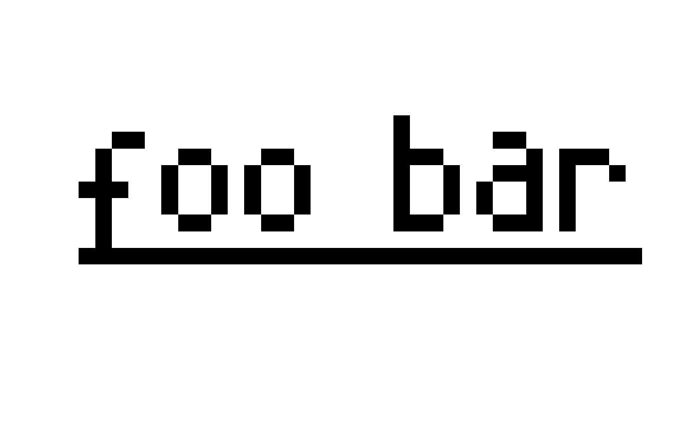
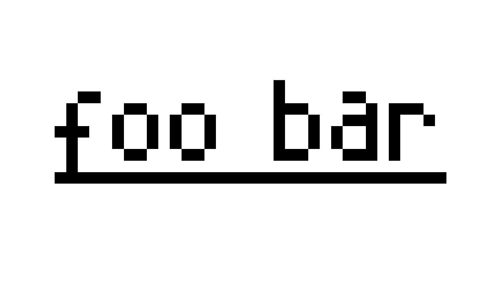

Plot AmigaFFH objects using base plotting routines.
Usage
# S3 method for class 'AmigaBasicShape'
plot(x, y, ...)
# S3 method for class 'AmigaBitmapFont'
plot(x, y, ...)
# S3 method for class 'AmigaBitmapFontSet'
plot(x, y, ...)
# S3 method for class 'hardwareSprite'
plot(x, y, ...)
# S3 method for class 'IFFChunk'
plot(x, y, ...)
# S3 method for class 'IFF.FORM'
plot(x, y, ...)
# S3 method for class 'IFF.8SVX'
plot(x, y, ...)
# S3 method for class 'IFF.ILBM'
plot(x, y, ...)
# S3 method for class 'IFF.ANIM'
plot(x, y, ...)
# S3 method for class 'SysConfig'
plot(x, y, ...)
# S3 method for class 'AmigaIcon'
plot(x, y, asp = 2, ...)Arguments
- x
An AmigaFFH object to be plotted. See usage section for supported object classes. If
xis anAmigaBitmapFont()orAmigaBitmapFontSet()class object, it will plot the full bitmap that is used to extract the font glyphs.- y
When
xis anAmigaIcon()class object,ycan be used as an index. In that case, wheny=1the first icon image is shown. Wheny=2the selected icon image is shown.When
xis anAmigaBitmapFontSet()class object,ycan be used to plot the bitmap of a specific font height (y).When
xis anAmigaBasicShape()class object,ycan be used to select a specific layer of the shape to plot, which can be one of"bitmap","shadow"or"collision".- ...
Parameters passed onto the generic
graphicsplotting routine.When
xis anAmigaBitmapFont()or anAmigaBitmapFontSet()object, '...' can also be used for arguments that need to be passed onto theas.raster()function.- asp
A
numericvalue indicating the aspect ratio for the plot. For many AmigaFFH, the aspect ratio will be based on the Amiga display mode when known. ForAmigaIcon()objects a default aspect ratio of2is used (tall pixels).When
xis anAmigaBitmapFont()orAmigaBitmapFontSet()object, an aspect ratio of 1 is used by default. When theTALLDOTflag is set for that font, the aspect ratio s multiplied by 2. When theWIDEDOTflag is set, it will be divided by 2.A custom aspect ratio can also be used and will override the ratios specified above.
Details
A plotting routine is implemented for most AmigaFFH objects. See the usage section for all supported objects.
Examples
## load an IFF file
example.iff <- read.iff(system.file("ilbm8lores.iff", package = "AmigaFFH"))
## and plot it:
plot(example.iff)
 ## AmigaIcons can also be plotted:
plot(simpleAmigaIcon())
## As can the cursor from a SysConfig object:
plot(simpleSysConfig())
## As can Amiga fonts:
data(font_example)
plot(font_example)
plot(font_example, text = "foo bar", style = "underlined", interpolate = FALSE)

## As can AmigaBasicShapes:
ball <- read.AmigaBasicShape(system.file("ball.shp", package = "AmigaFFH"))
plot(ball)
## AmigaIcons can also be plotted:
plot(simpleAmigaIcon())
## As can the cursor from a SysConfig object:
plot(simpleSysConfig())
## As can Amiga fonts:
data(font_example)
plot(font_example)
plot(font_example, text = "foo bar", style = "underlined", interpolate = FALSE)

## As can AmigaBasicShapes:
ball <- read.AmigaBasicShape(system.file("ball.shp", package = "AmigaFFH"))
plot(ball)